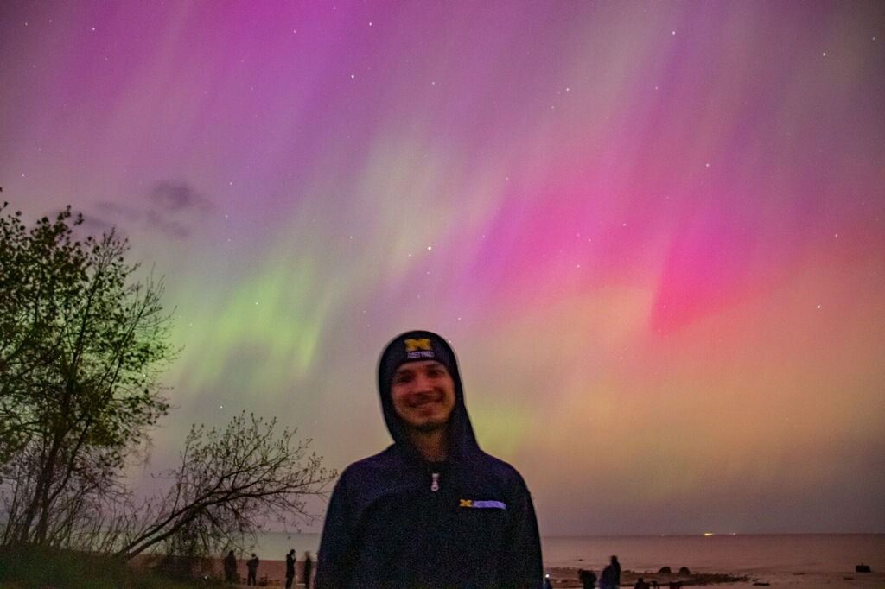

First Year Astronomy Ph.D. Student at the University of Massachussetts, Amherst
Curriculum VitaeTeaching and outreach is a key component of my experience in academia, and one of my biggest motivators for pursuing a professional career in astronomy. I have been fortunate enough to be involved with numerous programs designed for education and outreach of individuals across a wide range of backgrounds. You can find a full list of my educational and outreach experience at the link below!
My current research is rooted in galactic dynamics. I have been working alongside several members of the Galactic Dynamics Group at the University of Michigan along with a cohort of international collaborators to constrain the central SMBH mass of 18 compact stellar systems (CSS) in the Virgo cluster; the first census of its kind. We have obtained observations of 18 CSSs with the JWST NIRSpec IFU and are currently working on applying the Schwarzschild method of dynamical modeling to detect and constrain the mass of each system's SMBH.
My role in this project has been determining the lower limit of detectable SMBH mass in these systems. By constructing large scale batches of "mock galaxies", we were able to generate observations which spatially and spectrally mimicked JWST NIRSpec IFU observations. Using these mock observations, we were able to probe the lower mass limit of detectable SMBHs. We can now confidently say that a SMBH with mass greater than ~1% of the system's stellar mass is detectable.
Now, I am working alongside Zach Sunmers at the University of Calgary to tailor the JWST data reduction pipeline to best suit our needs. This includes implementing a custom background subtraction process to squeeze as much quality out of our observations as possible!
As of recent, I have also began investigating the possible biases that a cluster-like environment (i.e., non-isolation) may introduce to dynamical SMBH detections. The process of tidal heating which occurs in such an environment has the ability to alter some of the key assumptions made in the dynamical modeling process, in turn possibly underestimating SMBH detections made with this method. Using N-body simulations and the FORSTAND modeling regime, I hope to explore this topic over the next ~year (i.e., check back later for more info!).
Dynamical SMBH detection
Investigating biases introduced to dynamical SMBH mass estimates by a cluster (non-isolated) environment
Formation scenarios for pulsar-planet systems
Galaxy/SMBH co-evolution
SMBH formation
Galaxy formation and evolution
Searching for IMBHs through dynamical modeling
Prior to my beginning in the field of astronomy I had a wide variety of desired career paths. In highschool I participated in a two year vocational program that certified me in automotive mechanics. After quickly realizing that I did not thoroughly enjoy that career path, I enrolled at Macomb Community College. I initially planned on pursuing a career in the fashion industry, but due to some unforeseen circumstances I decided to not pursue that path. After some directionless pondering, I stumbled onto the idea of pursuing a degree in astronomy and astrophysics. It was the first career path that I wholly felt I would not regret. Four years later, here I am! Outside of academics, I enjoy hiking, photography, rock climbing, (generally, I enjoy outdoor activities) and the Yugioh TCG.
I am always happy to chat about my academic journey, provide advice to other non-traditional students interested in astronomy, or just generally talk about the field! Please feel free to reach out to me at my email (listed at the bottom of my page) with any questions/concerns!